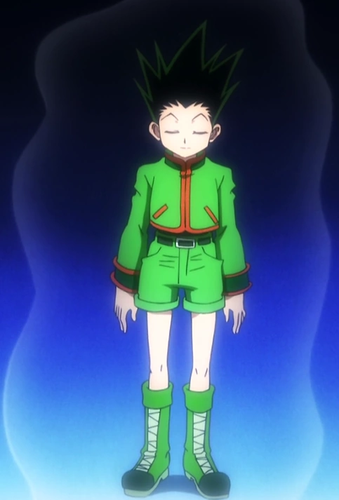

Con el fin de comprender plenamente el Nen, uno debe aprender primero los cuatro principios fundamentales de la escuela de Shingen-Ryu Kung-fu.Todo lo demás,
incluyendo un practicante de las capacidades individuales de Nen, se basa en las operaciones básicas del flujo de aura de una persona.
Los cuatro principios fundamentales, en orden de estudio, son: Ten, Zetsu, Ren, y Hatsu.
Una vez que una persona tiene sus nudos de aura abiertos, debe aprender a evitar que el aura se escape fuera de su cuerpo.Ten (缠, Barrera) es el proceso de mantener los nodos abiertos y a su vez generar un flujo de aura a través y alrededor del cuerpo en lugar de que se aleje de él. Una vez que se mantiene crea una barrera alrededor del usuario que, según es descrito, se siente similar a un líquido tibio y viscoso. Tener un manto de aura rodeando el cuerpo es la defensa más básica contra los ataques emocionales de otros usuarios de Nen, sin embargo, no puede defender de ataques físicos. Ten mantiene el vigor juvenil y reduce el envejecimiento de cada uno; al no escaparse, la energía alimenta al cuerpo evitando así su descomposición y por ende el proceso de envejecimiento. A través de la meditación frecuente, se puede mejorar la calidad del Ten.
Mientras Ten permite al usuario evitar que el aura se escape fuera de su cuerpo, Zetsu (绝, Anular) detiene el flujo de aura de su cuerpo por completo. Mediante el cierre de todos sus nodos de aura, el usuario es capaz de detener casi todo flujo de salida de su aura como el agua de una válvula. Puesto que el usuario ya no está rodeado por su propia aura, es más sensible al aura de los demás. Esto puede ser útil durante el seguimiento de otra persona y también evitará que los demás usuarios del Nen lo noten. Zetsu también se puede utilizar para aliviar la fatiga, ya que obliga a la capa externa del aura del cuerpo a ser completamente contenida dentro. Sin embargo, como Zetsu implica apagar el aura de uno, puede ser peligroso debido a que deja el cuerpo indefenso ante cualquier ataque de aura. Incluso un ataque débil mejorado con Nen podría hacer un daño masivo. Ejemplo de estados de Zetsu, son los dejados por la cadena de Kurapica o Posterior al robo de una habilidad por parte de Chrollo Lucifer.
Ren (练, Fortalecer; Mejorar) es una aplicación directa de Ten. Dado que el usuario es capaz de evitar que el aura se escape fuera del cuerpo, también es posible para ellos producir más aura a su alrededor sin tener que preocuparse por perderla. Ren se centra en la salida de una alta cantidad de aura y mantenerla en el cuerpo, la ampliación del tamaño y la intensidad de la misma. Si Ten es considerado puramente defensivo, entonces Ren típicamente es usado para la ofensiva. Esto aumenta la resistencia y durabilidad física del usuario y proporciona un gran número de aura a las técnicas avanzadas o habilidades individuales que decidan utilizar.

Hatsu (发, lanzamiento, accionar) es la liberación o transmisión del aura de una manera que puede ser proyectado para llevar a cabo una determinada función. En esencia, Hatsu es una expresión personal de Nen que crea una habilidad paranormal especial y única (coloquialmente llamado habilidad Nen). Un buen Hatsu debe reflejar el propio carácter de una persona y se proyecta como una utilización de todos los principios basicos del Nen. Uno nunca puede realmente dominar Nen si sólo copia las habilidades de otras personas.